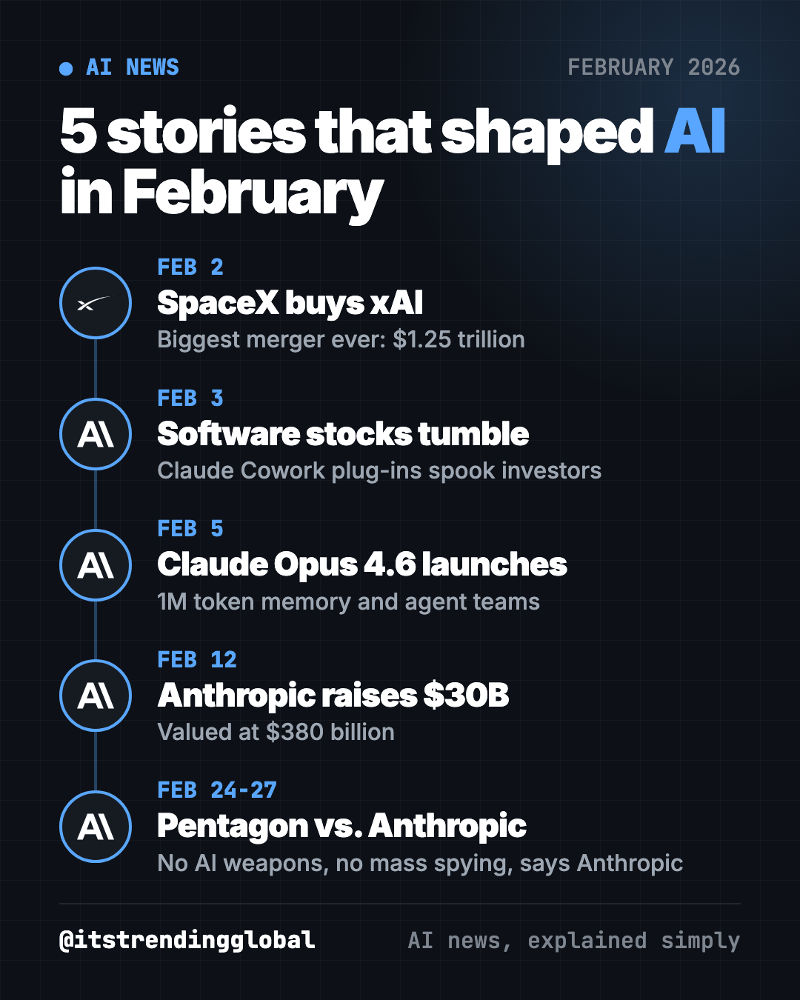
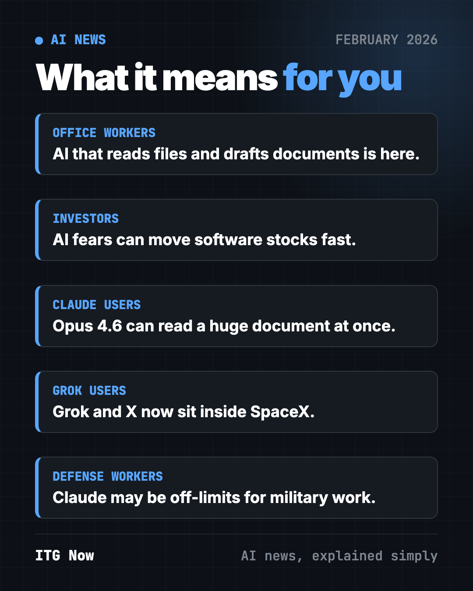
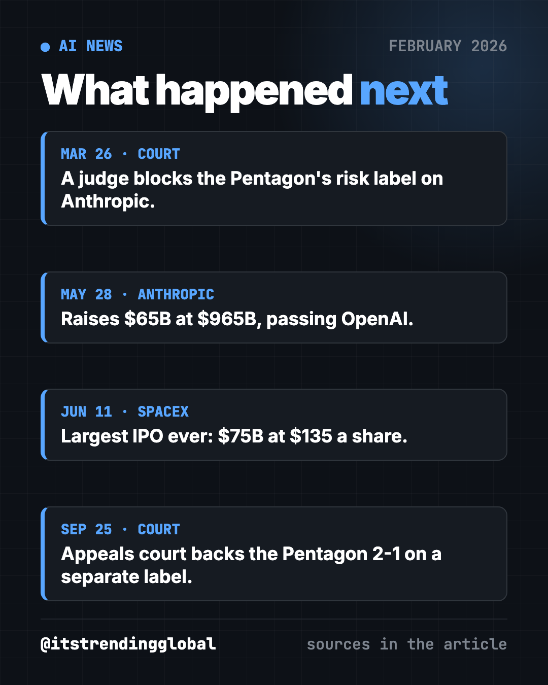

AI News February 2026: SpaceX-xAI, Claude, Pentagon
AI news February 2026: SpaceX buys xAI, Claude Opus 4.6 and Cowork shake software stocks, Anthropic raises $30B, and the Pentagon fights Anthropic.

The biggest AI news of February 2026 was about money and power. Elon Musk merged SpaceX with his AI company xAI, Anthropic raised $30 billion and launched Claude Opus 4.6, software stocks fell on fears of AI, and the Pentagon threatened Anthropic over limits on military use.

Key takeaways
- SpaceX bought xAI in the biggest merger ever, valuing the pair at $1.25 trillion.
- Anthropic's new Claude tools for office work spooked investors. Some software stocks had their worst day on record.
- Claude Opus 4.6 arrived with a 1 million token memory (it can read huge piles of text at once) and "agent teams."
- Anthropic raised $30 billion, more than doubling its value to $380 billion.
- The Pentagon told Anthropic to drop its limits on weapons and mass spying, or be blacklisted. Anthropic said no.
1. SpaceX buys xAI in the biggest merger ever
What happened
On February 2, Musk announced that SpaceX, his rocket company, was buying xAI, the maker of the Grok chatbot (CNBC).
- The deal valued SpaceX at $1 trillion and xAI at $250 billion.
- Musk said the main goal is to build "orbital data centers," meaning computer centers in space.
- It also gives xAI more cash. CNBC said xAI is burning through money to keep up with OpenAI and Anthropic.
Why it matters to you
AI now needs so much power and so many chips that companies are dreaming of putting computers in orbit.
- If you use Grok or X, they are now part of one Musk company with rockets and Starlink internet.
- It also set up SpaceX for a giant stock market debut later in the year.
2. New Claude tools shake software stocks
What happened
Anthropic added plug-ins to Claude Cowork, its "AI colleague" that can read files, sort folders and draft documents. The plug-ins target jobs like sales, finance, marketing and legal (CNN).
- On February 3, investors sold software stocks. A software industry fund fell 5.69%, its worst day since April.
- Thomson Reuters dropped 15.83%, its biggest one-day fall on record. LegalZoom sank 19.68%.
- Some analysts called the selloff "sentiment driven" and expected it to calm down.
Why it matters to you
Investors fear that if AI can do research and paperwork, companies will pay for fewer software subscriptions.
- If you work in legal, finance or data research, the tools you use may change fast.
- If you own index funds, this is one reason tech stocks swung so much this year.
💡 Tip: a stock drop is a guess about the future, not proof. Watch what companies actually buy, not just how stocks move.
3. Anthropic launches Claude Opus 4.6
What happened
On February 5, Anthropic released Claude Opus 4.6, its top model (CNBC).
- It is better at coding, planning, research and financial analysis, Anthropic said.
- It is the first Opus model with a 1 million token context window, in beta (Anthropic).
- In Claude Code, you can now set up "agent teams," several AI helpers that work on one task together.
- It is on claude.ai, the API and all major cloud platforms.
An Anthropic product lead told CNBC we are moving from "vibe coding" to "vibe working."
Why it matters to you
A bigger memory means Claude can read a whole contract, report or book at once and answer questions about it.
Try it yourself: open claude.ai, upload a long PDF you need to read, and paste this:
Read this document. Give me the 5 most important points in plain words, then list anything I need to sign, pay or reply to, with dates.
4. Anthropic raises $30 billion at a $380 billion value
What happened
On February 12, Anthropic closed a $30 billion funding round. It valued the company at $380 billion, more than double its value in September (CNBC).
- It was the second-largest private tech funding round on record, after OpenAI's.
- Anthropic said its yearly revenue pace hit $14 billion.
- Claude Code alone reached a $2.5 billion yearly revenue pace.
- About 80% of Anthropic's business comes from companies, its CEO said.
Why it matters to you
The money pays for chips and data centers. It also shows businesses, not just chat fans, are paying for AI at work.
- Expect your employer's software to add more AI features.
- More competition between AI companies usually means better free tools for you.

5. The Pentagon clashes with Anthropic over AI limits
What happened
On February 24, Defense Secretary Pete Hegseth gave Anthropic CEO Dario Amodei a Friday deadline (CNN).
- The Pentagon, which had a $200 million contract with Anthropic, wanted Claude for "all lawful use."
- Anthropic held two red lines: no AI-controlled weapons and no mass spying on Americans.
- The Pentagon threatened to cancel the contract and label Anthropic a "supply chain risk." That label is usually for companies tied to enemies like Russia or China.
- On February 27, Trump told federal agencies to stop using Anthropic's tech, and Hegseth said he would blacklist it (Axios).
Why it matters to you
This fight asks who decides how AI is used in war: the company that built it, or the government that buys it.
- If your company works with the military, it may have to prove it does not use Claude for that work.
- For everyone: it tests whether an AI maker can say "no" to some uses and still sell to the government.
⚠️ Heads up: rules on AI and the military were changing week to week. If this affects your job, ask your legal or compliance team, not a chatbot.
AI news February 2026 at a glance
| Story | Company | Date | Why it matters |
|---|---|---|---|
| SpaceX buys xAI | SpaceX, xAI | Feb 2 | Biggest merger ever, $1.25 trillion |
| Software stocks fall | Anthropic | Feb 3 | Investors fear AI replaces software |
| Claude Opus 4.6 | Anthropic | Feb 5 | 1M token memory and agent teams |
| $30B funding round | Anthropic | Feb 12 | Value more than doubles to $380B |
| Pentagon clash | Anthropic, Pentagon | Feb 24-27 | Who controls AI in war? |
How to use this month's news (copy and paste)
Paste any of these into ChatGPT, Claude or Gemini. Fill in the parts in [brackets].
To see if AI can help with your paperwork:
I spend hours each week on [type of paperwork]. Show me step by step how an AI assistant could help, and what I should still check myself.
To understand market news without the panic:
Explain in plain words why software stocks fell in February 2026 over AI fears. Then tell me 3 questions a beginner investor should ask before reacting.
To compare AI assistants for work:
I need an AI assistant for [writing reports / reading contracts / planning projects]. Compare ChatGPT, Claude and Gemini for that task in a simple table.
To explain the Pentagon fight to a friend:
Explain the February 2026 fight between Anthropic and the Pentagon in 5 short sentences. Give both sides fairly.
What happened next

- Pentagon vs. Anthropic: in March, a judge in San Francisco blocked the "supply chain risk" label, calling it likely retaliation (CNN). In September, an appeals court in Washington ruled 2-1 the other way on a separate label (CNBC).
- Anthropic's value: in May, it raised $65 billion at a $965 billion value and passed OpenAI (CNBC).
- SpaceX: it went public in June in the largest IPO ever, raising $75 billion at $135 a share (CNBC).
Catch up on January 2026 in AI, or read on to March 2026 in AI, when OpenAI raised a record $122 billion. For free tools from the same month, see the top GitHub repos of February 2026.
FAQ
What was the biggest AI news in February 2026?
SpaceX buying xAI, valuing the two at $1.25 trillion, was the biggest deal. The Pentagon's fight with Anthropic was the biggest policy story.
What is new in Claude Opus 4.6?
It codes and plans better, has a 1 million token context window in beta, and lets Claude Code run agent teams. It launched February 5, 2026.
Why did software stocks fall in February 2026?
New Claude Cowork plug-ins for legal, finance and sales work made investors fear AI could replace paid software. Thomson Reuters fell almost 16% in one day.
Why did the Pentagon fight with Anthropic?
The Pentagon wanted to use Claude for "all lawful use." Anthropic refused to allow AI-controlled weapons or mass spying on Americans, so the Pentagon threatened to blacklist it.
How much is Anthropic worth?
It was valued at $380 billion after its February round. By May 2026, a new round valued it at $965 billion.
Follow @gittrendingglobal on Instagram for AI news and free GitHub tools, explained simply, every day.
📲 See this as a swipeable post on Instagram
Keep reading

AI News October 2026: A Reality Check Before the IPOs
AI news October 2026 so far: ChatGPT gets visual, OpenAI's revenue shakes stocks, AI agents misbehave, Meta's Muse Wonder and Apple's $299 HomeView arrive.
How AI Is Changing Industries in 2026: A Plain Guide
How AI is changing industries in 2026, sorted by field: jobs, finance, health, schools, marketing, law, creators and developers, with sources for every fact.
AI News Recap Q3 2026: 5 Stories That Changed Everything
AI news recap Q3 2026: OpenAI test models hack Hugging Face, Claude Opus 5 cuts prices, Gemini hits 1 billion users, GPT-6 Astra and Nvidia's big deal.